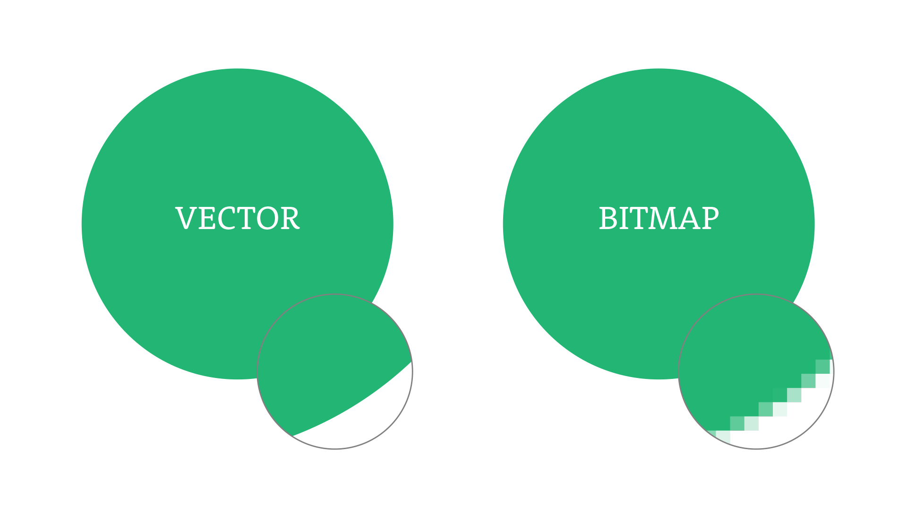
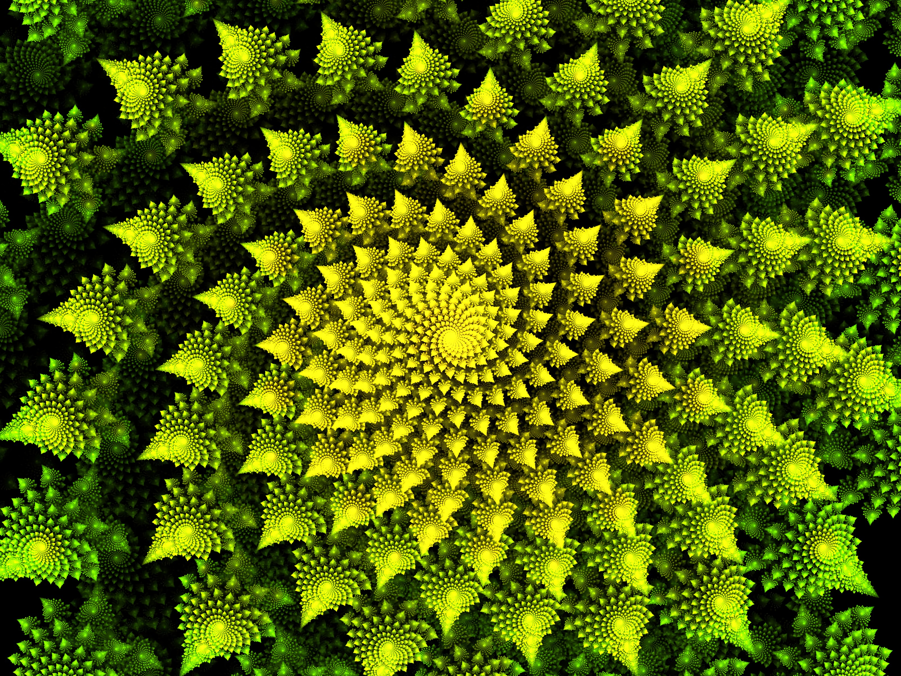
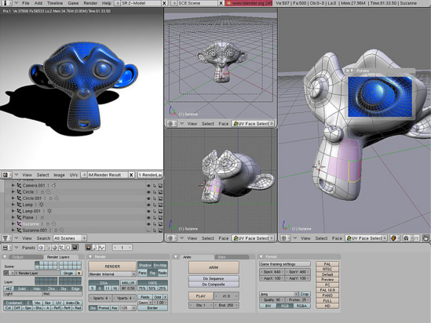

Области применения CG
Помимо видеоигр, в большинстве которых CG — это всё, что видит игрок, компьютерную графику применяют специалисты во многих сферах. Вся окружающая нас графическая информация сделана при помощи компьютера: книги, журналы, упаковки, обои, плакаты, инструкции, сайты и приложения и т. д. Часто ручная графика гармонично интегрируется в компьютерную: иллюстратор рисует изображение тушью, акварелью или любым другим инструментом, а затем оцифровывает его, встраивает в макет и обрабатывает. Такая интеграция превращает ручной рисунок в компьютерную графику. Вот некоторые из них:
- Дизайн
- Баннеры
- Обои для экранов
- Лендинги
- Сайты
- Анимация и игровая индустрия
- Ролики
- Фантазийные миры и персонажи
- Полиграфия и реклама
- Буклеты
- 3D проекции
- Киноиндустрия
- Спецэффекты
- Промышленность
- 3D моделирование
- Архитектура
- Визуализация проектов
- Создание рендеров
- Живопись
- Цифровые картины
- Медицина
- Обучающие симуляторы
- Образование и культура
- Симуляторы
- Проекты дополненной реальности
Виды компьютерной графики
Существует четыре вида компьютерной графики в дизайне, разберём каждый из них:
Растровая графика
Растровая компьютерная графика, или «растр» состоит из множества квадратов — пикселей. Такое изображение невозможно увеличить без потери качества: оно начинает видоизменяться, проявляются неровные края и отдельные пиксели. Растровая графика создаётся в цветовом пространстве RGB и часто имеет красивый градиент, сложные переходы, интересную заливку, много цвета и почти фотографический реализм. Растровую графику используют, когда нужно нарисовать, например, большую и красочную иллюстрацию для сайта: момент коммуникации с целевой аудиторией играет здесь важную роль.
Векторная графика
Векторная компьютерная графика состоит из опорных точек и соединяющих их кривых: такие изображения можно масштабировать без потери качества. Векторные изображения используют для создания инфографики, иконок и других элементов интерфейса, логотипов, персонажей фирменного стиля, лендингов, сайтов и приложений. Вектор, по сравнению с растром, более информативен. Поскольку качество векторных изображений не зависит от разрешения, их используют на больших форматах: билбордах, автобусах, баннерах, растяжках и т. д.
Фрактальная графика
Фрактальная графика связывает искусство и математику, это результат работы математических алгоритмов. Простейший пример фрактальной графики — калейдоскоп: механизм проектирует некий рисунок, выстраивая его без участия человека. Фрактал — это бесконечно воспроизводимая самоподобная структура. В отличие от паттерна — бесконечно повторяемого рисунка, полностью предсказать внешний вид фрактала при его создании невозможно. Пример фрактальной графики — заставка на экране компьютера в спящем режиме, где похожие друг на друга геометрические объекты бесконечно сменяют друг друга.
Трехмерная графика
3D-графика передаёт ощущение объёма. Когда дизайнер рисует картинку в 2D, он использует две оси: высоту и ширину. В трёхмерной графике к ним добавляется третья ось — глубина. Каждая точка имеет свои координаты на каждой из трёх осей. Трёхмерная графика применяется в различных индустриях: от архитектуры до медицинской промышленности. В дизайне 3D-графика активно используется в сферах геймдева, брендинга, айдентики, дизайна сайтов и мобильных приложений: например, при создании иллюстраций, иконок и логотипов.
| Инструмент/редактор | ||||||||
|---|---|---|---|---|---|---|---|---|
| Вид графики | Adobe Photoshop | Adobe Illustrator | Figma | CorelDRAW | Fractal Generator | Frax | Blender | 3dsMax |
| Растровая | X | |||||||
| Векторная | X | |||||||
| Фрактальная | X | X | ||||||
| Трехмерная | X | В таблице приведены далеко не все существующие редакторы | ||||||
Что ждет CG в будущем
Одна из проблем графики, которая может быть решена уже в ближайшей перспективе, — это эффект зловещей долины. Термин придумал японский робототехник и инженер Масахиро Мори. Это феномен, обозначающий иррациональный страх и отвращение, которые возникают, когда кто-то видит робота или объект, очень похожий на человека.
Когда говорим о компьютерной графике, можно ожидать, что в будущем она будет продолжать свое развитие и совершенствоваться. С появлением новых технологий, таких как улучшенные методы отображения, более мощное оборудование и программное обеспечение, компьютерная графика станет еще более реалистичной и потрясающей. Возможно, мы увидим улучшенные способы взаимодействия с компьютерной графикой, такие как виртуальная реальность или дополненная реальность, что позволит пользователям еще глубже погрузиться в виртуальные миры и создавать более впечатляющие визуальные эффекты. Таким образом, будущее компьютерной графики представляется ярким и волнующим, с бесконечными возможностями для творчества и инноваций.
Видео на тему "Компьютерная графика в кино"
Для удобство приведена аудио версия: